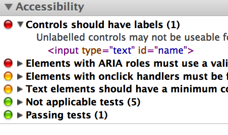
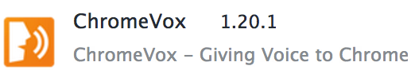
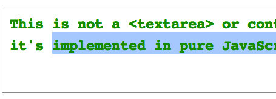
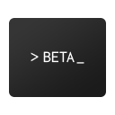

-

Accessibility Developer Tools
-

ChromeVox
Adapted from the slides presented at Google I/O on June 29, 2012.
Press right-arrow to advance, 'F' for fullscreen, 'P' for presenter notes.
Last Year
This Year
Testing for Accessibility
Advanced Screen Reader Accessibility
-

Accessible Text Editor
-

Accessible Terminal Emulator
ChromeVox Extensions
PlusVox ChromeVox Extension
APIs for low vision
We can invert all content on this page, including images, with the following css:
html {
-webkit-filter: invert()
}
APIs for speech
Finding Accessibility Errors
Two things we know to be true
Many web apps are not fundamentally inaccessible in design.
Simple errors can cause big problems for users!
Existing tools didn't meet our needs
- Some recommend older techniques like
accesskey,longdesc,noscript, over newer alternatives from ARIA or HTML5 - Some only work well for static content, with limited support for web apps
- Some don't integrate well with existing workflows
- Some only work on one platform
- ...That's why we created the Accessibility Developer Tools for Chrome!
 Accessibility Developer Tools
Accessibility Developer Tools
(A Chrome Extension)
| Category | Some things we check for |
|---|---|
| Labels and Alternative Content | Images and form fields are labeled |
| Keyboard Accessibility | Focusable UI controls |
| ARIA | Valid ARIA roles |
| Low-vision Accessibility | Foreground/background contrast ratio |
| Video Accessibility | Captions and fallback content |
 ChromeVox
ChromeVox
(Another Chrome Extension)
- A screen reader built using JavaScript, HTML, and CSS!
- You control it using keyboard shortcuts.
- Speaks using the Chrome Text-To-Speech API.
Demo
Enter your name:
Yes, please add me to your mailing list! You may receive one email per week.
Thanks for registering!
Download Accessibility Developer Tools
from the Chrome Web Store and try it on this page now.
Accessibility Developer Tools & ChromeVox
No cost. Open source. Better together.
- Accessibility Developer Tools:
- http://goo.gl/rVokq (Web Store link)
- ChromeVox:
- goo.gl/ddR5A (Web Store link)
- chromevox.com
- google-axs-chrome.code.google.com
Advanced Accessibility Techniques
Custom user interfaces and ARIA
- Native HTML5 links and controls are accessible by default, e.g.:
<button>Click here</button><input type=range></input><textarea></textarea> - ARIA (Accessible Rich Internet Applications), now part of HTML5,
allows you to build arbitrary custom controls and make them
accessible, for example a ratings gadget from last year's talk:
<div id="stars" class="star_rating" tabindex="0" role="slider" aria-valuemin="0" aria-valuemax="5" aria-valuenow="3">...</div> - You can find plenty of examples online for accessible buttons, dialogs, list boxes, combo boxes, and more. What's next on the horizon?
Options for Text Editors
What options do you have for an HTML text editor?
<input type="text"></input><textarea></textarea><div contentEditable></div>- or roll your own
Custom text editor example 1
Custom text editor example 2
Custom Text Editors
Why roll your own?
- Want rich text
- contentEditable buggy, different across browsers
- Want features that aren't possible with contentEditable
An Accessible Custom Text Editor
- Below is a text editor written in pure JavaScript.
- No input, textarea, or contentEditable!
- It's accessible today with Chrome and several screen readers.
Custom Text Editor accessibility
- Make it focusable
- Give it a role=textbox
- Use the native cursor/selection (but optionally draw it yourself)
<div role="textbox" aria-multiline="true" tabIndex=0>
...
</div>
<script>
var sel = window.getSelection();
sel.setBaseAndExtent(node, index, node, index);
</script>
Terminal Emulator
Secure Shell
- Google has built a Secure Shell app for Chrome with a pure-HTML terminal emulator.
- Could it be accessible too?
- Similar to the custom text box, we made the following changes:
- Make it focusable
- Give it a role=textbox
- Sync the native cursor/selection with the terminal cursor
- With no other changes, this worked! With minor heuristics in ChromeVox, it was possible to get a pretty good experience.
ChromeVox Extensions
Google+ Without PlusVox
ChromeVox APIs
- Chrome Extensions using additional ChromeVox APIs
-
cvox.Api.setSpeechForNode(targetNode, nodeDescriptions) - Rearrange content based on higher-level understanding of the web app
PlusVox
- Google+ already has shortcuts for navigating through the stream
- Enhance the Google+ eyes-free experience for heavy users
- Better spoken feedback
- Eliminates repetitive information
- Changes spoken order to be more meaningful
- Gives additional information (number of comments)
PlusVox
function generateSpeechForThread(domObj) {
var op = new gPlusPost();
op.author = authorFromDomObj(domObj);
...
var commentCountNode = getCommentCount(domObj);
var nodeDescs = new Array();
nodeDescs.push(generateNodeDescriptionFromPost(op));
cvox.Api.setSpeechForNode(domObj, nodeDescs);
}
ChromeVox APIs
cvox.Api.syncToNode(targetNode, speakNode)
cvox.Api.click(targetElement, shiftKey)
New APIs for Accessibility
CSS3 Filter Effects
- New emerging W3C standard
- Apply color filters to everything - including iframes, video, etc.
#element1 {
-webkit-filter: invert()
}
#element1 {
-webkit-filter: brightness(20%)
}
#element1 {
-webkit-filter: grayscale()
}
#element1 {
-webkit-filter: invert() contrast(80%)
}
Inverting
We can invert all content on this page, including images, with the following css:
html {
-webkit-filter: invert()
}
Inverting (preserve images)
We can use a simple rule to avoid inverting JPEG images:
html {
-webkit-filter: invert()
}
img[src*="jpg"] {
-webkit-filter: invert()
}
Note that the I/O logo at the bottom is still inverted.
(This often works better for UI images, as opposed to photos.)
High Contrast extension
Chrome Speech Recognition Extension API
Any text box can be speech-enabled with a single attribute, like this:
<input x-webkit-speech>
- Chrome also provides a more advanced app/extension API for speech recognition
- This API is still experimental - the details may change
Speech Recognition API example
function checkStart() {
if (chrome.extension.lastError) {
alert("Couldn't start speech input: " + chrome.extension.lastError.message);
}
}
function recognitionFailed(error) {
alert("Speech input failed: " + error.code);
}
function recognitionSucceeded(result) {
alert("Recognized '" + result.hypotheses[0].utterance +
"' with confidence " + result.hypotheses[0].confidence);
}
chrome.experimental.speechInput.onError.addListener(recognitionFailed);
chrome.experimental.speechInput.onResult.addListener(recognitionSucceeded);
chrome.experimental.speechInput.start({ "language": "en" }, checkStart);
Speech Recognition Demo
Speech Recognition Results
{hypotheses:
[{confidence:0.836, utterance: "open email from larry page"},
{confidence:0, utterance: "open the email from larry page"},
{confidence:0, utterance: "open email to mary paint"},
{confidence:0, utterance: "open email merry paint"},
{confidence:0, utterance: "open email flary paint"}]}
Chrome TTS Extension API
- Any Chrome app or extension can generate synthesized speech
using the
Text-to-speech (TTS) extension API. - Used not only for accessibility, but also for dozens of other applications:
- Speak highlighted text on the page.
- Speak new mail subject lines as they come in.
- Reminders for calendar events.
TTS Demo
- Try using the API right now:
Install and run TTS Demo from the Chrome Web Store.
Chrome TTS Engine API
Users can install new text-to-speech voices with just a click!
var speakListener = function(utterance, options, sendTtsEvent) {
sendTtsEvent({'event_type': 'start', 'charIndex': 0})
// (start speaking)
sendTtsEvent({'event_type': 'end', 'charIndex': utterance.length})
};
var stopListener = function() {
// (stop all speech)
};
chrome.ttsEngine.onSpeak.addListener(speakListener);
chrome.ttsEngine.onStop.addListener(stopListener);
TTS Engine implementation possibilities
- The TTS Engine API just handles dispatching requests for speech to your extension - it's up to you how to actually generate the speech and output the audio.
- What are some different ways to generate speech from a Chrome extension?
- Send request to server, stream resulting audio
- Pure-JavaScript using HTML5 Audio APIs
- Our preferred solution: Native Client
Introducing a new TTS engine...
The voice you've been listening to just now is now available on the Chrome Web Store!
US English Female Text-to-speech (by Google)
goo.gl/GR75u (Web Store Link)
- Built using Native Client, runs on all platforms
(4 GB of RAM, dual-core CPU highly recommended) - ~500 MB of voice data
- Same voice used for Voice Search on Android 4.1 "Jelly Bean"
One more thing...
One cool TTS API feature is the ability to listen for events and synchronize your UI with speech...
Install and run Animated TTS Demo from the Chrome Web Store.
Let's Recap
- Finding accessibility errors
- Accessibility Developer Tools extension
- Advanced accessibility techniques
- Text Editor, Terminal, ChromeVox Extensions
- Accessibility APIs
- CSS3 Filters, Chrome Speech Recognition API, Chrome TTS API, Chrome TTS Engine API